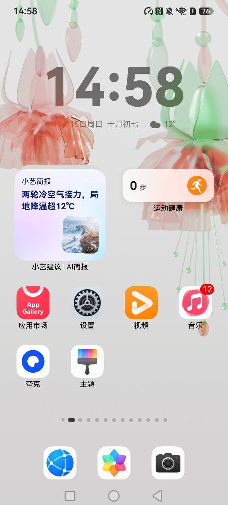

HarmonyOS uitest 扩展 · Node.js SDK
用一条长连接，
控制鸿蒙设备
UI automation, screenshots and H.264 casting for HarmonyOS — from Node.js.
把设备侧的 agent.so 与 libscreen_casting.z.so 封装成类型化 API：点击、滑动、截图、H.264 投流与 MP4 录制，走的是扩展自己的长连接，不是 hdc 的慢路径。
npm install uitest-sdk

快速开始
$ npm install uitest-sdk $ node quickstart.mjs ✓ connected BRA-AL00 · 1216×2688 ✓ click(608, 1344) 32 ms ✓ captureScreen() → 608×1344 JPEG 118 ms